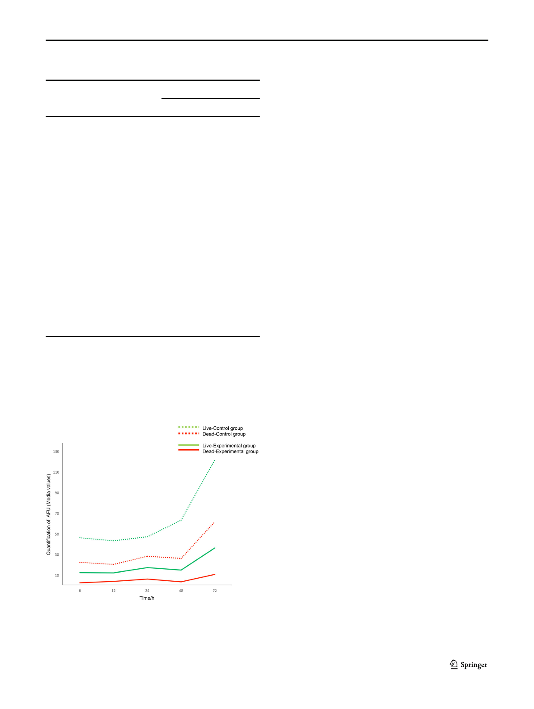

Braz J Microbiol (2021) 52:619–625
Table 1 Description of the evolution of the values of AFU and mean
differences between the study groups at 6, 12, 24, 48, and 72 h and their
respective p values
Times (h) Media values of AFU Fluorescence green viable cells
Difference (Exp-Ctrl) p*
6
23.8/10.8
SD 13.7/5.1
12
22.8/11.5
SD 5.9/2.5
24
19.0/10.2
SD 5.2/1.8
48
37.2/11.7
SD 16.2/3.2
72
59.8/18.2
SD 49.0/11.8
13.98
14.63
8.01
25.98
34.32
< 0.05
< 0.05
< 0.05
< 0.04
< 0.03
Times (h)
6
12
24
48
72
Media values of AFU
9.9/7.0
SD 2.5/1.3
8.2/6.7
SD 3.9/2.7
11.0/8.5
SD 6.1/4.6
11.3/9.0
SD 3.4/3.8
25.5/17.6
SD 10.7/5.0
Fluorescence red viable cells
Difference (Exp-Ctrl) p*
3.83
> 0.05
4.81
< 0.05
1.69
> 0.05
2.74
> 0.05
0.58
> 0.05
*Student’s T for independent samples
*Indicates significant differences between both groups (p ≤ 0.05) (SD
standard deviation)
Fig. 3 Biofilm growth curve of S. aureus on the uncoated (control group)
and coated (experimental group) PE surfaces, media UAF values
corresponding to viable and dead cells
623
Discussion
In this study, a nanostructured coating with AuNPs to a PE
surface was evaluated, resulting in an effective antimicrobial
alternative that inhibits the formation of a biofilm of S. aureus
under controlled dynamic conditions; less settlement of
S. aureus during biofilm formation on a surface of PE with
an AuNP coating was shown, observing a decrease in the
bacterial viability compared to an uncoated surface nanostruc-
tured with AuNPs.
AuNPs have advantages over other types of nanoparticles;
previous studies have shown high biocompatibility with low
cytotoxicity [14], additionally, it has been shown that AuNPs
can be conjugated with cefaclor a second-generation antibiot-
ic, what it provides a potent antimicrobial activity on S. aureus
and E. coli, proposing its use in hospital surfaces [15]. The Au
and silver nanoparticles (AuAgNPs) are another successful
conjugation since they act as antibacterial/antibiofilm activi-
ties [16]. Another feature previously reported is its use in the
nanocomposites functionalization with Au-chitosan and the
small molecule 2-mercapto-1-methylimidazole, with a high
bactericidal effect and low toxicity, was demonstrated by pro-
posing its use in medical devices [17]. According to the pre-
vious works and ours results, the AuNPs are an alternative to
coat the biomedical PE devices surfaces, thus avoiding bacte-
rial settlements and the formation of biofilm of nosocomial
bacteria of such as S. aureus that directly affect the integral
health of patients, it has even been reported that it can reduce
the biofilm of S. aureus and Pseudomonas aeruginosa with
high concentrations of gold and iron-oxide nanoparticles [18].
Our study showed that AuNPs behaved like an agent with
antimicrobial activity of S. aureus biofilm; our results are
confirmed by other articles that prove AuNPs may serve as
potential therapeutic agents against the biofilm-forming bac-
terial pathogens since the essentially inert and nontoxic nature
of Au makes it an attractive material as an antimicrobial agent
[6].
Our results are in agreement with the previous study; Yu
et al. [19] who reported the strong inhibitory effect of AuNPs
on pathogenic biofilm formation and invasion to host cells
conclude that this effect does not result from growth inhibition
but is mediated by the strong electrostatic interaction between
AuNPs and pathogenic cells. Boda et al. [20] demonstrate
potential therapeutic activity of ultrasmall AuNPs with core
diameters of 0.8 and 1.4 nm as an effective treatment option
against staphylococcal infections. Bing et al. [20] reported that
the AuNPs exhibited striking antibacterial properties against
both gram-positive and gram-negative bacteria and excellent
ability to disperse bacterial biofilms.
The PE is a high-weight polymer. molecular, thermoplas-
tic, with a variable crystalline structure, with high-
performance applications in medical devices. In this study, a